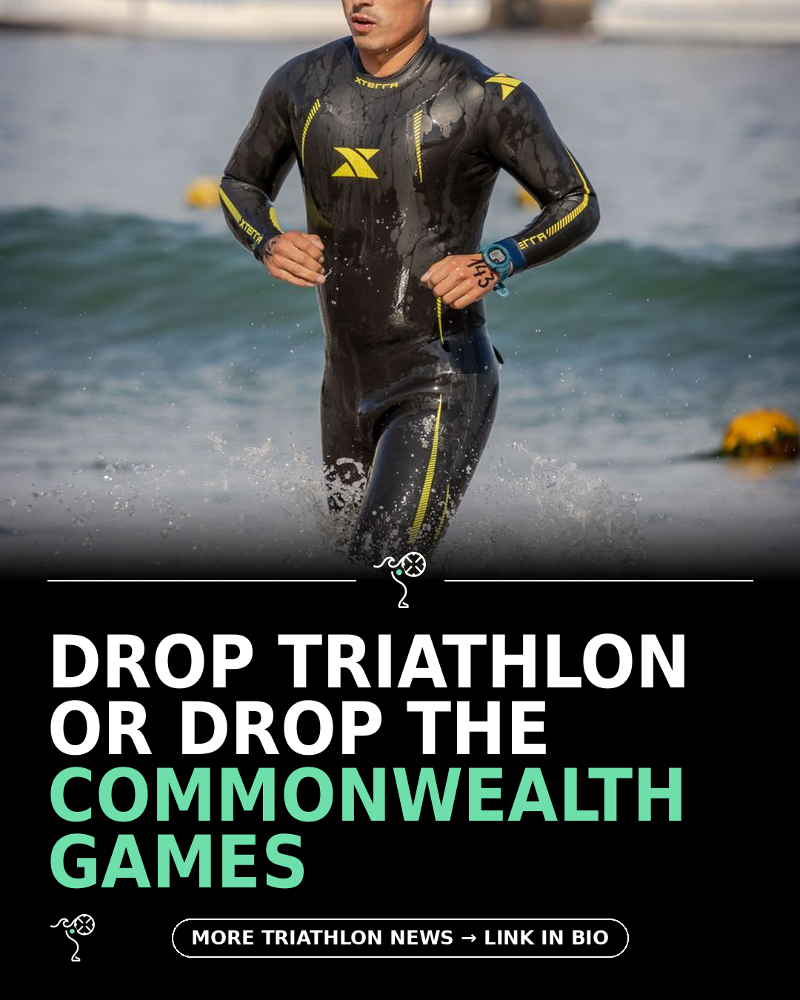

Triathlon News Daily
Wednesday, 26 August 2026 · generated automatically

Today's stories
- Include triathlon or scrap the Commonwealth Games entirely220 Triathlon
- Garmin launches Fenix 9 and 9 Pro with satellite messaging220 Triathlon
- Older Garmin watches will inherit Fenix 9 software featuresDC Rainmaker
- Nine aero road helmets tested in the wind tunnel220 Triathlon
- Why the open water start still terrifies experienced pool swimmersBlog - A Triathlete's Diary
- What are the best running shorts for men in 2026? We test 10 for run speed and comfort220 Triathlon